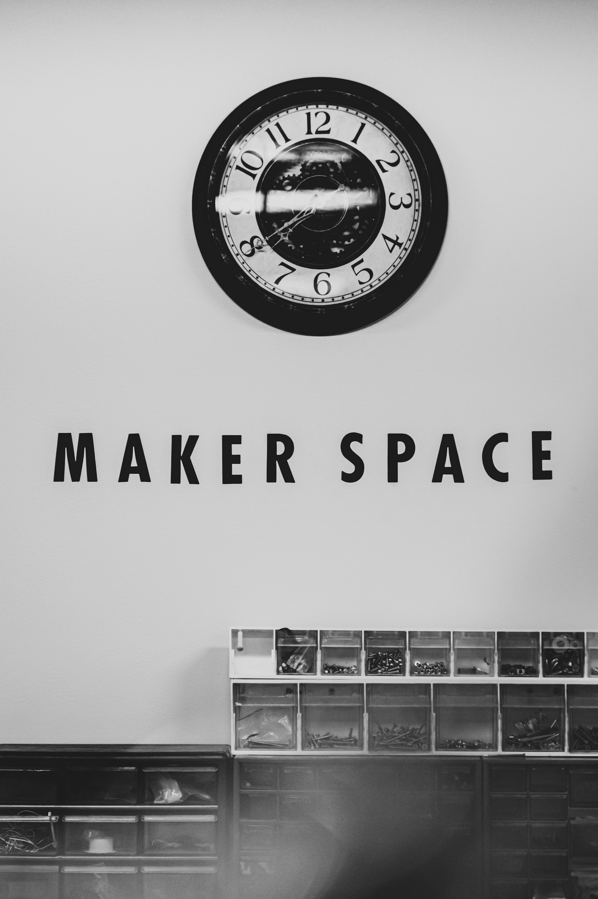

Full wordmark
Primary mark for websites, documents, sponsorships, presentations, and event materials.
Download SVG ↓Society logos, organization descriptions, colors, contact information, and basic guidance for campus collaborators, media, supporters, and future officers.

Use the full wordmark where space allows. Use the emblem for profile images, icons, small applications, and engineering graphics. Do not stretch, recolor, outline, or separate internal elements.

Primary mark for websites, documents, sponsorships, presentations, and event materials.
Download SVG ↓Profile image, favicon, badge, project identifier, and small-format organization mark.
Download SVG ↓The palette uses deep maroon, signal gold, technical black, warm ivory, and restrained interface tones. Gold is an accent, not a background for long text.
The Oberlin 3-2 Engineering Society is a student-led community in formation for engineering-minded students across departments and class years. It is being built to support the 3-2 pathway, preserve peer knowledge, develop interdisciplinary projects, organize panels and workshops, and connect students to opportunities.
Contact the organizing team for current leadership information, project context, event collaboration, support inquiries, or permission for a use not covered here.
{kind=link}
{kind=link}